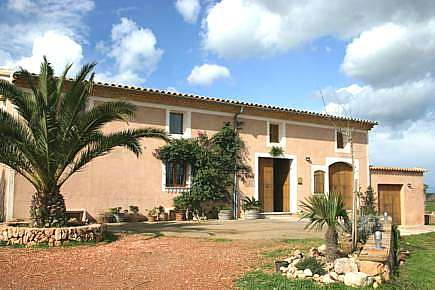
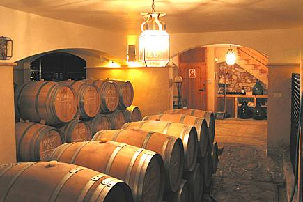
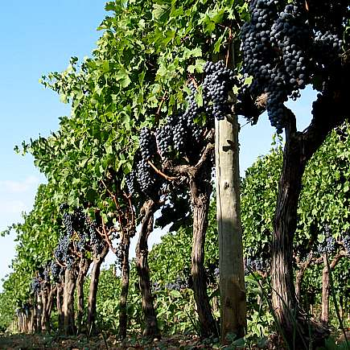
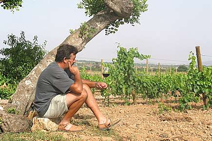

Visítanos en la bodega Celler Ses Tres Ermites o contacta con nosotros para cualquier consulta sobre nuestros vinos.

El Celler Ses Tres Ermites se encuentra en una llanura plácida cerca de Manacor, rodeado de los viñedos que dan vida a nuestros vinos. Un entorno privilegiado donde la luz, el viento y la tierra se unen para crear caldos únicos.

Todas las visitas se realizan con horas concertadas. Te invitamos a recorrer los viñedos y la bodega, conocer el proceso de elaboración artesanal y degustar una selección de nuestros vinos acompañados de aperitivos.


Estamos en la carretera Manacor-Felanitx, en las tierras de Son Fangos. Todas las visitas son con cita previa.
Recorre los viñedos y la bodega de la mano de la familia Gelabert. Descubre el proceso de elaboración y degusta una selección de nuestros vinos.